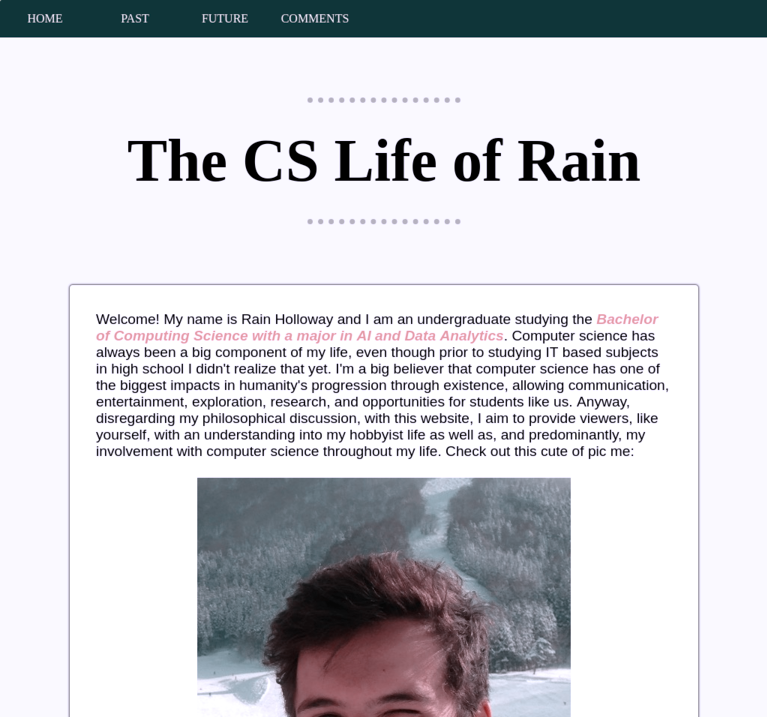

| HOME | PAST | FUTURE | COMMENTS |
During the design and development process of my personal website, I have been pleasantly surprised by my abilities to achieve an adequate quality of presentation while also managing my CSS classes with the intent for reusability. In the past, I have attempted to design websites with reusability in mind however it never succeeded to my intentions. For example, to create this text box it requires 1 wrapper 'div' which allows the inner 'section' to be centered as well as two classes: text-box and shadow. The text-box class provides the section with structure and the 'flex' capabilities, while the shadow simply adds a shadow to the surrounding border, giving it a nice floating effect. If I want to recreate this exact text-box, I can simply cut and paste the HTML without worrying about altering any CSS at all.
Regarding the overall aesthetic of my website, I aimed for a minimalistic approach with few well-coordinated colors like the deep blue (header + footer), gold (highlighted text), pale blue (background), and white (text-box). All the content is centred providing very easy readability and navigation through all sections on one particular page. Futhermore, the navigation bar located in the header has evenly spaced, concise hyperlinks that are positioned appropriately on the page. I have also added a fixed footer at the bottom of the screen that identifies copyright (just for fun), my name, the year, and the assignment name which I think is a nice touch.
Overall, I believe I've completed the assignment considerably well, incorporating a minimalistic design, focusing on responsiveness with smaller devices, making use of few colours to the advantage of colour-blind individuals, all the while maintaining reusable, quality HTML and CSS markup.
The website's structure is very simple yet effective in presenting the viewer with important content. The structure simply put starts with the header containing the navigation options, followed by the centred page title, then any optional subtitles, followed by the text content and a simple (unecessary yet aesthetic) footer located at the bottom of the page. Rather than arranging the content in a table-like manner, I have structured the content in a vertical composition that allows a unidirectional reading pattern that is easy to navigate.
The header is the navigation section, providing access to all webpages at all times. The navigation bar is universally the same for all pages to contribute to both the aesthetic and functional quality of the design. It consists of a 1 row table with 4 table data elements each containing 1 anchor that links to its respective webpage. The header has one CSS class in use: 'navigation'. This class is used to color the background to that nice deep blue, alter the table's layout and positioning, as well as the text padding and colour. Each cell in the table is evenly spaced providing a nice look and feel. I could have also implemented the navigation system using a flex container. However, I am fairly new to this concept and have only started learning it recently.
Following onto the main content, the text-box configuration was probably the hardest aspect of the design. Using CSS to accurately code what you want is very difficult as CSS and browsers have very intricate properties that could completely alter the interpretation in comparison to yours. However, after reading through some small articles on flex box, I was able to implement the text boxes as I like them and as you see them now. to create this text box it requires 1 wrapper 'div' which allows the inner 'section' to be centered as well as two classes: text-box and shadow. The text-box class provides the section with structure and the 'flex' capabilities, while the shadow class simply adds a shadow to the surrounding border, giving it a nice floating effect. If I want to recreate this exact text-box, I can simply cut and paste the HTML without worrying about altering any CSS at all.
In regards to the images, all images that are contained within a text-box were very easy to implement, the simple img tag was sufficient for my needs. However, the stream of three kombucha images on the home page was difficult as I really wanted to ensure my website was viewable on smaller devices. Originally, the images would simply be cut out by the smaller browser window, which is aesthetically and functionally poor for website standards. At this time I was implementing them as a table with 1 row and 3 table data elements. I soon implemented the flex box method similar to text-box which allows the images to wrap to the next line if the browser window is too small and shrink if needed. These properties are achieved with flex box properties. To incorporate these properties, the images were required to be positioned inside a div container with the CSS property 'display: flex;' as opposed to inline or block, or inline-block. This container also had to have the property 'flex-flow: row wrap' which intuitively states the children of this container will be positioned in a row, but if the browser window is too small for the children to be viewed properly, wrap them to the next line underneath. This can be seen in action if you view the kombucha images on the home page while changing the browser window size.
Finally, the footer was extremely easy to implement. I created a footer container, gave it a width of 100% to fill its horizontal scope, and set the css display value to 'fixed'. This makes the footer always stay on the screen even if you scroll. I also positioned it using 'left: 0' 'bottom: 0' to ensure it was attached to the bottom of the screen. I also created a span with the contents "Web Systems Assignment" with the CSS property 'float: right' that makes the span move to the far-right position.
There are a lot of websites out there that display A LOT of content and fit as much as they possibly can into the space they are provided. This can affect how the important content is perceived by the viewer and can potentially be off putting and not aesthetically sound. With my design, I've aimed for a simple, yet effective minimalistic design that allows the viewer to be focused on the important content of each page. There isn't any overly complex tabular layout, or multidirectional viewing sequences (horizontal, vertical, diagonal?). With my design, you start at the top of the page, read the title, get a guage for what that specific page is expressing, and continue down to read the important information. All the information is labeled by either the main title or a subtitle that described the following block of text.
White space allows individual components of a website to be viewed effectively without any interruption from other components. By applying padding and margins to both content tags (p, h1, h2, h3) and container tags (div, section, header, footer), all components on the screen have been separated by white space effectively. This is aesthetically pleasing for viewers as it allows them to identify each component with distinct borders and separation.
Correlating with my minimalistic design pattern, I have chosen to keep the colour pallete for the components to small size. I have included the main colors as follows: deep blue (header, footer), pale blue (background), gold (highlighted text), black (main text), white (text background and header/footer text). Too many colours can have a negative impact on the aesthetic of a website as it can end up looking "old-fashioned", unkept, and unprofessional. For example, YouTube's colour pallete is simply red, white, and grey with the addition of multimedia thumbnails provided by the content creators. This minimal colour pallete adheres to modern web design as well as contributing to accessibility respects towards colour-blind viewers.
My ultimate goal for my personal website was to focus on allowing all devices to effectively view the information without any unaesthetic interpretations by the browser. This involves the resizing and repositioning of images, the width of text boxes, font sizes, and any other component that may be impacted by smaller browser window sizes. I have been successful with images and text box sizing, however there are implications where the text and navigation is too small for small devices such as a phone or iPad. Chrome's developer tools allows the testing of webpages on different screen sizes to guage the responsiveness of a website. To enable this functionality, press F12, followed by Ctrl + Shift + M. When viewed on an iPhone 6/7/8, the content is readable however it is rather small. The header and footer content is also extremely small, and this is a flaw as the navigation is difficult to see and it is also difficult to click the individual links. However, the kombucha images on the home page have wrapped accordingly to the window size as expected from flex items as described above in Website Technicality. If viewed from an actual iPhone on Safari using this link: https://rainh2001.github.io/websystems-assignment/ it actually renders much better than the Chrome tools version.
Colour blindness is a common disability that affects people's interpretation of colour. There are 4 main types of colour blindess: Protanopia (red/green blindess), Deutanopia (red/green blindess), Tritanopia (blue/yellow blindness), Achromatopsia (greyscale). There is a very useful website: Toptal Colorblind Web Page Filter which allows developers to input an online URL and have a side-by-side view of the normal view v.s. the colourblind view for each type. Using GitHub Pages to host my static website, I copied the link: The CS Life of Rain and analyzed how my website looks depending on the colour blindness types. Protanopia and Deutanopia had almost no change (other than the images) as the majority of my website is blue. However, for Tritanopia, all blue colours transitioned to a rainforest green as seen in the image below. This change actually aesthetically looks pleasing as its own colour theme. So all in all, this website is colour blindness friendly.
To allow vision impaired users to effectively understand ALL content on the page including images, I have added alt text to all image HTML tags. This allows disabled users to use text-to-speech applications to read out the alt text for images to describe what is being displayed. I have added the alt text by adding the HTML attribute 'alt' to all 'img' tags and providing a brief description.
This website has been tested on all the popular internet browsers including: Chrome, Mozilla Firefox, Opera, Microsoft Edge, and Internet Explorer (IE). All components are correctly displayed on all the browsers except internet explorer. IE is a very old browser with an outdated engine. It is clear that IE has an issue with flex box and its properties as on the home page, all the kombucha images are sideways and are not positioned accordingly to browser window size. They seem to be displayed as a table of elements rather than a flex box of flex items. I am unaware of any fix for this issue.